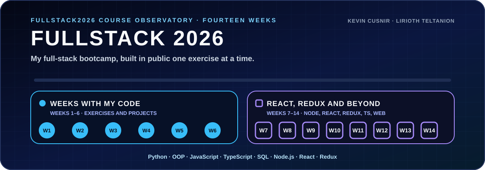

Exercises XP
The nine core exercises of Day 1, all in exercisesxp.py. I gave each one its own function, exercise_1() to exercise_9(), and main() calls them in order.

Every exercise, daily challenge and mini project from my Developers Institute full-stack bootcamp, all fourteen weeks, day by day. Browser projects open as live demos; Python, Node.js and SQL work links to the code and its README.
The nine core exercises of Day 1, all in exercisesxp.py. I gave each one its own function, exercise_1() to exercise_9(), and main() calls them in order.
Two bonus exercises in exercisesxpgold.py. One prints eight lines with a single print(), the other asks for a month and answers with its season.
The harder Day 1 set, in exercisesxpninja.py. Two exercises are about how the terminal finds Python, one is a list of boolean puzzles, one counts characters and the last is a little…
Remote Exercise
A small password gate in password_checker.py: it keeps asking until the password passes every rule, then gives it a strength label.
Daily Challenge
The program in buildupastring.py asks for a string and only goes on if it is exactly 10 characters long. Then it prints the string growing one letter per line and finishes with a…
Ten exercises in exercisesxp.py. The first half plays with sets, tuples and lists; the second half turns loops into small programs that take input.
Nine more Day 2 exercises in exercisesxpgold.py. Most are list and loop practice; the last one is a small guessing game against random.
The four Ninja exercises for Day 2 live in exercisesxpninja.py, standard library only. I wrote each one as a function that returns its result, and _cli() does the asking and printing.
Remote Exercise
The tricky part of this counter is direction: tricky_counter.py counts from a start to an end number in either direction, always including the end, and then counts what came out.
Daily Challenge
Two short problems in dailychallengelistandstrings.py: make a list of multiples, and remove letters that repeat next to each other. I kept the prompts in a _cli() function, so importing…
Daily Challenge Gold
You type your birthdate and happybirthday.py draws an ASCII cake. The number of candles is the last digit of your age.
Four exercises on dictionary basics, all in exercisesxp.py: a dictionary made from two lists, a cinema bill for a family, a nested brand dictionary I had to edit step by step, and three…
Two bigger dictionary exercises in exercisesxpplus.py. The first turns lists of scores into averages and letter grades. The second takes a list of sales and answers questions like "who…
exercisesxpgold.py holds two small programs. One looks up birthdays by name and lets me add a new person first. The other adds up what it would cost to buy a fruit shop's whole stock.…
The car manufacturers exercise, in xpninjacars.py. It starts from the string "Volkswagen, Toyota, Ford Motor, Honda, Chevrolet" and answers a list of questions about it, one small…
Timed Challenge 1
A timed one, so I kept it short. timedsentence.py prints the words of a sentence in the opposite order.
Timed Challenge 2
perfectnumber.py prints True when a number is perfect and False when it isn't. Perfect means the number equals the sum of its divisors without itself: 6 works (1 + 2 + 3), 10 doesn't (1…
Remote Exercise
Six one-line answers in list_comprehension.py. Each task is a small function that returns a list, a dictionary or a set built with a comprehension.
Daily Challenge
Two problems in dictionaries.py. First, a dictionary that says at which positions each letter of a word appears. Second, a shopping list: given prices as strings like "$1,000" and a…
Daily Challenge Gold
My Caesar cipher in caesarcipher.py. It can encrypt, decrypt, or try all 26 shifts when I don't know the key. Without arguments it opens a menu; with flags it runs once and exits.
My first real practice with writing functions, seven exercises in exercisesxp.py. They go from a function that only prints a line to a small weather report built from three functions…
Three Gold exercises in xpgoldfunctions.py: can someone retire based on gender and date of birth, what is X + XX + XXX + XXXX, and how many throws does it take to roll doubles with two dice.
Four harder function exercises in xpninjafunctionssingle.py: putting a full name together with proper capitals, a Morse code translator that works both ways, a star frame around any…
Timed Challenge 1
countoccurence.py counts how many times one character appears in a string. Upper and lower case count as different characters.
Daily Challenge
A console program for a small coffee shop: show the menu, add a drink, change a price, delete a drink and exit. The menu is a dictionary (drink name → price), and every action is its own…
Daily Challenge
There's a sentence hidden in a grid of letters and symbols. If I read the grid down each column and keep only the letters, it comes out. My solution is decode_matrix() in solvethematrix.py.
Twenty small functions to go over the Week 1 basics again: lists, strings, loops, conditions and a bit of math. They're all in challengessolutions.py, each with type hints and a one-line…
Two exercises here. The first draws star patterns with loops. The second gave me a short piece of sorting code and asked what it does, so I traced it. main.py runs both, and the code is…
Remote Exercise
find_duplicates.py reads a line of words or numbers and tells me which ones repeat, how often, and what the line looks like with the repeats taken out.
Remote Exercise
My first window app. first_gui.py uses tkinter, which ships with Python: type a name, press Greet, and a label answers with a greeting and a running count.
Daily Challenge
The two-sum challenge: make 20,000 random numbers and find every pair that adds up to a target, 3728 unless I pass another one. I solved it twice so I could compare: a hash-table version…
Daily Challenge
Two string problems in challenges.py. The first sorts words typed with commas between them. The second finds the longest word in a sentence, where only letters count toward the length.
Mini Project
Hangman in the terminal. The game picks a random word or phrase, draws the gallows in ASCII and you can miss 6 times before you lose. main.py is the loop that talks to the player, and…
Mini Project
Tic-tac-toe for two people at one keyboard, all in tictactoe.py. X and O take turns on a 3×3 board until one of them gets three in a row or there are no empty cells left.
Four classes in exercisesxp.py, one per exercise: Cat, Dog, Song and Zoo. Running the file plays all four demos in order.
exercisesxpgold.py holds the three Gold classes: Circle, MyList and a MenuManager for a restaurant.
Two Phone objects talking to each other. The class in exercisesxpninja.py makes calls, keeps a call history and sends text messages.
Daily Challenge
Old MacDonald had a farm, and here it's a Farm class. It counts each type of animal and prints them in a lined-up column that ends with "E-I-E-I-0!".
exercisesxp.py runs four short programs back to back. Each one practices a different side of inheritance, and they all print a numbered header (EX1 to EX4).
A small banking system in exercisesxpgoldinheritance.py: an account you have to log in to, a child account with a minimum balance, and an ATM menu on top.
Conway's Game of Life in exercisesxpninjainheritance.py. The base class plays on a fixed grid, and a subclass adds rows and columns when the cells reach the edge.
Daily Challenge
Like the page buttons under a search result: Pagination takes a list and a page size, shows one page at a time and moves forward, back or straight to a page.
Daily Challenge Gold
A small evolution simulator in dna.py. Genes make chromosomes, chromosomes make a DNA, and an Organism keeps mutating until one DNA is made only of 1s.
Seven XP exercises live in one script, xp_oop_modules_all.py. The first is about dunder methods, the other six each try a different module.
Five tasks that lean on the standard library (datetime, re, secrets, string). Everything is in exercisesxpgoldmodules.py.
More dunder methods in exercisesxpninjadunder.py. One part is a family of temperature classes that convert and compare, the other a just-for-fun quantum particle.
Remote Exercise
Two classes that inherit from Python's own list, in extended_list.py, and a separate main.py that imports them as a module and tries them out.
Daily Challenge
You can create my Circle in circle.py from a radius or from a diameter. After that, circles can be added together, compared and sorted like numbers.
Daily Challenge
Four French greetings go in, a dictionary of English translations comes out. The translating is done by the googletrans module.
Daily Challenge Gold
UserInfoApp asks for five records like John,20,90 and sorts them by name, then age, then score.
xp_files_json_all.py covers both XP tasks: a sentence made of random words from a file, and a JSON string that I read, change and save to disk.
Two separate things in this folder: a restaurant menu that lives in a JSON file, and two scripts that search GIFs on the Giphy API.
A restaurant menu that only accepts Valentine's specials when they pass a set of regex and spelling rules, and a Dungeons & Dragons character generator that saves its results as JSON and…
Daily Challenge
dailychallengetextanalysis.py has two classes. Text answers questions about a piece of text, and its subclass TextModification cleans the text up.
Exercise
A number guessing game using sys.argv and the standard random module.
Exercise
A command-line file translator. It reads English UTF-8 text and writes Japanese into a new UTF-8 .txt file.
Daily Challenge
How long does a page really take to load? This timer uses requests and time to measure from the moment the request leaves until the last byte of the body has arrived.
Daily Challenge
Half theory, half code. Below are my short answers to the OOP quiz, and in deck.py there's a deck of cards made from a Card class and a Deck class.
Mini Project
Type a word and the program tells you if it's in the word list, then shows every other word made of the same letters. The logic and the menu are in separate files.
Mini Project
The classic game against the computer. One module knows the rules, the other runs the menu and keeps score.
Mini Project
My weather app talks to OpenWeatherMap through the PyOWM library. In the terminal it shows the current weather, city IDs, forecasts and air quality, and a second script draws a humidity…
Daily Challenge
air_management.py is a tiny airline system with four classes: airlines, planes, flights and airports. A plane flies at most once per day, and every list of flights stays sorted by date.
Mini Project
Who gets vaccinated next? vaccines.py answers that with a Human class for each person and a Queue class that holds the order and the rules.
Seven warm-up exercises on arrays, loops and objects. I put them on one HTML page with a button for each, so I can run them one at a time and read the result under the button.
Three short tasks with conditionals, loops and an object. There are no buttons here: the script runs as soon as the page loads and logs everything.
Two Node exercises: compare the BMI of two people, and decide if a list of grades passes or fails.
Daily Challenge
The page asks me for a sentence. If it has not and later bad, everything from not to bad becomes good. If not, the sentence comes back as it was.
Daily Challenge
A triangle of six rows of stars, drawn twice: once with a single loop and once with two nested loops.
Daily Challenge Gold
I take an array of numbers, turn it into strings a few different ways, and then sort it from biggest to smallest with my own Bubble Sort. No Array.prototype.sort allowed.
Seven exercises, half about functions and half about changing the DOM. Like on Day 1, one page runs them: each exercise has a card for its output, and the same text goes to the console.
Four little functions for strings and arrays, and one DOM task that paints the diagonal of a table red.
Five console exercises with loops and functions, and a sixth one that draws a month calendar on the page.
Exercise
A mock single-account login using arrays of objects, two prompts and a console newsfeed.
Exercise
A mock three-account login using arrays of objects, two prompts and a console newsfeed.
Daily Challenge
My little solar system. Every planet is a colored circle with its name in it, and its moons are spread around it. Nothing is written in the HTML: the script builds it all from an array.
Daily Challenge
You give it some words separated by commas and it prints them one per line inside a rectangle of stars. The longest word sets how wide the frame is.
Four DOM exercises on one page: I change an article, read a form, highlight the bold words and calculate the volume of a sphere.
Two exercises with timers: "Hello World" paragraphs that appear on a schedule, and a red box that slides across a yellow square.
Three small form exercises with a twist: the HTML has nothing but <div id="root"></div>, and JavaScript builds every section, select and button.
Three exercises with forms and events: a tip calculator, an email checker (once with a regex and once without), and the browser's geolocation.
Daily Challenge
A text field that only accepts letters. If I type or paste numbers or symbols, they vanish right away.
Daily Challenge
Mad Libs in the browser. I fill in a noun, an adjective, a name, a verb and a place, and the page turns them into a short story.
Mini Project
A Sign In form and a Sign Up form sit side by side, and a red panel covers one of them. The button on the panel slides it across and shows the other form.
Eight exercises on scope, the ternary operator, template strings, arrow functions, self-invoking functions and nested functions. They all live on one page.
Five short Node exercises on nested arrow functions, closures, currying and composition. For each one I wrote my prediction in a comment first, then ran the file to check it.
mergeWords builds a sentence one call at a time. Every call with a word adds it, and an empty call () hands back the finished sentence.
Daily Challenge
A small test of value against reference. I copy a client name (a string) and point a second variable at a groceries object, then change the originals and watch which copy follows.
Daily Challenge
My to-do list fits in one HTML file, with the CSS and the script inside it. I can add a task, tick it when it's done, or delete it.
Mini Project
A drum kit in the browser. There are nine pads, and each one plays its sound when I press its key or click it.
Mini Project
A pixel drawing board. I pick a color, hold the mouse button down and drag across the grid, and every square I pass gets painted.
Remote Exercise
Six string exercises with a small page around them. The functions live in js/exercises.js and never touch the DOM, so the page and a terminal demo share the same code.
Exercise 1
Another to-do app, but this one has All / Active / Completed filters and keeps the list in localStorage, so it's still there after a reload.
Exercise 2
A guessing game for colors. The page paints a random color, and I have to work out its rgb() value.
Exercise 3
A pocket calculator: the four operations, a sign key, percent, and the memory keys M+, M-, MR and MC.
Exercise 4
Whack-a-Mole with a 30-second clock. A hamster 🐹 jumps between nine holes, and the best five scores stay saved in the browser.
Exercise 1
The same three-part timer task as on Day 3, done again for the remote session: an alert after 2 seconds, a paragraph after 2 seconds, and then a new paragraph every 2 seconds until…
Exercise 2
I click a button and a red box slides 1px every millisecond until it hits the right edge of a yellow square.
Exercise 3
I drag a red box into a yellow target. If I drop it fully inside, it centers itself. If any part sticks out, it jumps back to where it started.
Even though it sits under the array day, this XP set is about forms and JSON. Everything is in one HTML file with an inline script: a GET form, a POST form and the Mario game object…
Four "what does this return?" exercises, written out in ArraysDestructuringXPGold.ts. The answers are exported constants, so the file both explains and proves each result.
Five short helpers in ArraysMethodsXPGold.ts: sum an array, drop duplicates, drop falsy values, repeat a string and line up two emoji racers.
Five array puzzles in arrayMethodsNinja.js, each answered with reduce, filter or map instead of a manual loop.
The second Ninja set, in arrayMethodsNinja2.js, works on a list of five games and uses the newer array methods.
Daily Challenge
Five cars in an array and two buttons. One finds the first Honda, the other draws the cars as cards sorted by year.
Daily Challenge
gameInfo holds four players with a team, a score and some items. Three forEach loops turn it into a list of usernames, a list of winners and one total score.
Six exercises in ObjectsDestructuringClassesXP.ts, going from destructuring to classes and ending with object references.
objectMethodsGold.js has six short exercises with the Object helpers and spread.
Classes, getters and setters, and a few helpers I wrote myself, in objectMethodsNinja.js.
Daily Challenge
VideoObjects.ts defines a Video with a title, an uploader and a length in seconds. Two videos are made by hand and five more come out of an array.
Three cards on one page (GET form, POST form, JSON Mario), with the logic in app.js.
Form #3 uses two pages. index.html sends a name and a last name with GET to result.html, and that page reads them back from its own URL.
Daily Challenge
Two inputs, name and last name. Send doesn't reload the page; it adds a list item with the time, the values as a JSON string and a pretty-printed copy.
Daily Challenge
allTruthy() answers true only if every argument it gets is truthy. The page has three fixed tests and a box for my own values.
Mini Project
My quote app in plain JavaScript. It shows a random quote (never the last one again), and I can like it, count its characters and words, add quotes and step through one author's quotes.
Three promise exercises in promises.js, each with a test button in index_promises.html.
Timers and promises in asyncGold.js. Every "download" is a fake delay made with setTimeout, so the timings are easy to see.
Daily Challenge
Two promise chains in daily_promises_morse.js: one upper-cases and sorts a list of words, the other turns text into Morse code.
Four exercises with the Fetch API and async/await. Each has a button in index.html; the full response goes to the console and a summary to the output panel.
Needs your own API key in config.js
Real requests this time. fetchGold.js talks to JSONPlaceholder, a free fake REST API that needs no key, using fetch() and async/await in Node.
Harder fetch patterns in fetchNinja.js: a timeout, reading an API page by page, a cache, and a limit on how many requests run at once.
Daily Challenge
I type a category and the page asks Giphy for one random GIF with that tag. Each GIF arrives with its own DELETE button, and a DELETE ALL button clears the whole list.
Needs your own API key in config.js
Daily Challenge
Two cities, four coordinates, one button. The page asks the sunrise-sunset.org API for both sunrises at once and only shows them when both answers are back. Paris and New York are filled…
Daily Challenge
Two dropdowns, an amount and a Convert button. The currency list and the rates both come from ExchangeRate-API, and the ⇅ button swaps the two currencies.
Needs your own API key in config.js
Mini Project
My Pokédex looks like the red device from the show: a screen for the official artwork, an info panel, a D-pad and a green button. All the data comes from PokeAPI.
Mini Project
Every click on Find Someone shows a random character from the Star Wars API (SWAPI): name, height, gender, birth year and home world.
All nine exercises sit in ExercisesXP_Basics.ts: typed constants, a union, if...else, a tuple, an object type, a DOM type assertion, a switch and an overloaded function.
Five TypeScript basics in ExercisesXPGold.ts: parameters, unions, tuples, a type alias and literal types.
The Ninja set in ExercisesXPNinja.ts goes one step further: generics, a discriminated union, overloads and safe parsing of unknown.
Daily Challenge
A small checker: validateUnionType(value, allowedTypes) gets a value and a list of type names, and says true when typeof value is in the list.
ExercisesXP_OOP.ts holds five short class and interface exercises, with a demo at the end.
Object-oriented TypeScript in ExercisesXPGold.ts: an abstract base class, access modifiers, an interface and a generic class.
ExercisesXPNinja.ts builds a generic repository, plays with keyof and mapped types, and adds an event emitter where every event has its own payload type.
Daily Challenge
A tiny library in one TypeScript file. Books follow a Book interface, a Library class keeps them by ISBN, and DigitalLibrary extends it with a website and a list of titles.
Seven exercises in ExercisesXP.ts, each checked with a console.log.
The Gold set in ExercisesXPGold.ts: an in guard on an intersection type, a generic converter and two generic classes.
The most type-level file so far. ExercisesXPNinja.ts uses conditional types, type guards on classes, ReturnType/Parameters, template literal types and satisfies.
Daily Challenge
handleData() takes a mixed list of users, products and orders, uses type guards to work out what each item is and writes one line about it. Unknown items get a line too, instead of an error.
Nine short first steps with TypeScript, all in ExercisesXP.ts. Each exercise is a few lines with a numbered console.log.
Exercise
Pantry Notes is a small React and TypeScript recipe finder. I can search ingredients, choose a recipe and read its quantities, preparation steps and total time. Redux Toolkit owns the…
items_customers.sql creates two tables, items and customers, puts the exercise data in them and asks six questions with SELECT.
exercisesxpplus.sql builds a students table in the bootcamp database, adds the six students from the exercise plus one row for me, and then runs every query the exercise asks for.
Three extra questions for the students table from XP Plus. All of them return first_name, last_name and birth_date.
Daily Challenge
actors.sql creates an actors table, counts the rows, and then tries to break it with blank fields to see what PostgreSQL accepts.
xp_sql_answers.sql is split in two: part A has four queries on the Day 1 items and customers tables, part B has fifteen on the dvdrental sample database. Every query has a comment with…
Day 2 practice on my own data: xp_gold_music_store.sql builds a small music store (artists, albums, tracks) and asks it seven questions.
Seven harder questions on the dvdrental sample database, in xp_ninja_dvdrental.sql.
Daily Challenge
A four-question puzzle about NOT IN and NULL. sql_puzzle.sql builds two tiny tables and writes the expected count and the reason next to every query.
xp_dvdrental_relationships.sql answers two dvdrental exercises. The first is about film languages and two new tables tied together with foreign keys; the second is a set of questions…
xp_gold_dvdrental.sql covers two more dvdrental exercises: rentals that are still out, and a "Happy Halloween" plan that adds up how much film each store could show.
Six multi-table questions on dvdrental in xp_ninja_dvdrental.sql, each one walking through three to five tables.
Daily Challenge
Orders with several items each, and PL/pgSQL functions that add up the price. Everything is in items_and_orders.sql.
Daily Challenge
Both kinds of relationship from today's lesson in one file, tables_relationships.sql: a customer with one profile (one-to-one) and students borrowing books (many-to-many).
The six package and text exercises have a separate terminal entry. The original five native-module examples remain below and can still run directly without installing dependencies.
Four native Node examples cover streams, recursive directory traversal, logging and timers. The command-line app below adds an interactive city weather dashboard alongside the original…
Exercise
Find out how long it is until the next January 1, how many whole minutes have elapsed since a birth date, and which Israeli public holiday is underway or coming next. From this…
Task 1
The first task only uses greet() from the shared greeting.js module.
Exercise 1
Five products in one file, shared with CommonJS, and a second file that searches them by name.
Task 2
The second task prints a colored message with the chalk package, through the shared colorful-message.js.
Exercise 2
Same idea as exercise 1, but with ES modules: data.js exports a list of people and app.js imports it to print their average age.
Task 3
In the third task the shared read-file.js module reads files/file-data.txt and prints it.
Exercise 3
fileManager.js is a little CommonJS module with promise-based readFile and writeFile. app.js uses it to read one text file and write another.
Exercise 4
todo.js exports a TodoList class, and app.js uses it: three tasks go in, two get marked as done, and the list is printed.
Exercise 5
math.js is a CommonJS module with add and multiply. app.js loads it together with the lodash package and works on a short list of numbers.
Exercise 6
app.js uses the chalk package to print three styled lines in the terminal. That's the whole exercise: install a package and use it.
Exercise 7
Two short scripts with fs: the first copies a text file, the second lists what is in its own folder.
Daily Challenge
A small Node.js project built up in three steps: my own CommonJS module, an npm package (chalk), and reading a file with fs. At the end challenge.js puts the three pieces together.
Three Express exercises share one listener: a blog CRUD API, a book list/create/read API, and an Axios data-service route. The earlier five built-in HTTP servers remain available under…
Install the locked packages with npm ci. Run npm run practice to start the Express API on http://127.0.0.1:3100. The original native HTTP exercise still runs separately with npm start.
Daily Challenge
A guessing game served by my own Node.js server: the page shows an emoji, I pick its name from four options, and the server keeps the score and a leaderboard. Express receives the…
Three small routers on one Express server: two HTML pages, a todo API and a books API. Every router only maps URLs, and the logic sits in controllers/.
A posts API where the interesting part is the middleware: one runs on every request, two guard single routes, and two sit at the end for 404s and errors.
Open / to make a greeting: enter your name, choose one of six emoji, and select Make my greeting. The browser posts to the local Express server and displays a plain-text response. Native…
Daily Challenge
A trivia game with five questions. The Express side keeps the current question and the score, and a small page in public/ plays it with fetch().
The same blog and books APIs as Day 1, but now the data is in PostgreSQL and every query goes through Knex. The code is split into routes, controllers and models.
Six Knex queries on a tiny store (products, customers and orders). The script can run them on PostgreSQL or just print the SQL that Knex builds, which helped me compare Knex code with…
This time the tables are not created with a .sql file. Knex migrations build them and a seed fills them, and then a small Express API reads authors and books with a join.
Daily Challenge
Register and log in users with Express, Knex and bcrypt. The user data and the password hash live in two separate tables, and registration writes both in one transaction.
Daily Challenge
The assignment routes register a demo user, check credentials, list users, read one profile and update it. Registration collects name, lastName, email, username and password. The two…
Mini Project
"Territory", a two-player strategy game I made up for this mini project. Each player walks on a 6x6 grid and claims every cell they step on. You cannot enter the rival's cells, and after…
Mini Project
A terminal notes app with add, list, read and remove commands, backed by a local JSON file. The existing Express API and browser page remain available as an independent web…
Mini Project
A chat where messages show up in every open tab straight away. Express serves the page and Socket.IO keeps a live connection to each browser, with rooms, an online list and a typing notice.
Mini Project
A REST API for tasks that saves everything in data/tasks.json, so the tasks survive a restart without a database. It has full CRUD, input checks and clear error messages.
My first React app, made with Vite. Three short exercises about JSX: expressions inside { }, reading an object, and writing normal HTML tags (with styles) the React way.
Three exercises about props and lists. The default view now uses a real BootstrapCard component and a six-planet list. The earlier custom cards, eight-planet list and social links remain…
Daily Challenge
A destination carousel built with react-responsive-carousel. Four slides (Hong Kong, Macao, Japan and Las Vegas) move with arrows, dots, thumbnails or the keyboard, and they also play on…
Mini Project
A one-page landing site for "Neon Notes", a made-up study notes app. I built it from six small components so each section of the page is its own file.
Four exercises on props, state, events and useEffect, each in its own component and all shown on one page.
A counter with limits, a fully controlled form and a component that logs when it appears and disappears. Each one practises a different side of state.
Two controlled React forms demonstrate text, select, radio, checkbox and textarea state, inline validation, accessible correction and submitted previews. The original calculator,…
The default Clock & form view combines a live local clock with a custom-validated profile preview. Quote machine opens the original exercise: every click shows a new programming quote…
Daily Challenge
"Vote Your Language": four languages (Php, Python, JavaScript and Java), each with a button that adds a vote. The counts, a percentage bar and the current leader all update from one…
Three class-component exercises demonstrate error boundaries, updates and unmounting. The earlier component examples remain available under Earlier component demos.
Three exercises about lifting state up: the parent keeps the data and the children only report events back with callback props.
Three interactive widgets built only with useState and event handlers: tabs, a hover star rating and a box that follows the mouse.
Daily Challenge
A travel sign-up form split the container/presentational way: FormContainer owns the state and the handlers, FormComponent only draws the inputs and the live summary.
Mini Project
A two-column practice demonstrates the difference between a paragraph-level render failure and an explicitly handled event error. The original BuggyCounter simulations remain available…
Routing, local JSON files and a POST request, all in one Vite app. The shop page breaks on purpose so the error boundary has something to catch.
The class component lifecycle, step by step, and then the same color example rewritten with hooks to compare.
I wrote a small useFetch hook and used it three times against JSONPlaceholder: one todo at a time, a searchable user list and paginated posts.
Daily Challenge
React and Express talking to each other: the client reads a greeting from GET /api/hello and sends a form to POST /api/world, which answers with what it received.
Daily Challenge
A class-based country autocomplete with keyboard and pointer selection, plus the original sign-up form with client-side validation. Both run locally without sending or saving input. In…
Mini Project
A two-page React Router app on top of JSONPlaceholder: the home page lists the users as cards, and clicking one opens /users/:userId with that person's details and posts.
Three hooks beyond useState, one exercise each: useContext for a theme, useRef for a text box and useReducer for a todo list.
A shopping cart that combines useReducer with useContext, plus two custom hooks I can reuse later: useLocalStorage and usePrevious.
Three experiments with the performance hooks: useMemo around a heavy calculation, React.memo with and without useCallback, and a useDebounce hook for a search box.
Daily Challenge
A task manager where every change goes through one reducer: add, complete, edit in place, delete, filter and clear the completed ones. The tasks survive a page reload.
Mini Project
My take on the Herolo weather home assignment: search a city, see the current weather and a 5-day forecast, save favorites, and switch between °C/°F and light/dark.
Daily Challenge
Two number inputs, an operation picker and an Add Them button for addition (Calculate for the other operations). The result shows below, and the last five calculations stay in a small…
Mini Project
Press "New quote" and you get a different quote, and the background, the text and the button all fade to one new random color.
Mini Project
A photo gallery in the style of the SnapShot project: a search box, four category links (mountain, beach, bird, food) and a grid of photos from the Pexels API, each page with its own URL.
My first Redux app. A counter and a todo list keep their data in one Redux store, and a third reducer records the last actions so I can watch the flow while I click.
A small shopping cart written with plain Redux reducers. Products go into the cart, quantities change, and a coupon code takes a percentage off the total.
Sticky notes that can be undone and redone. I used it to try the parts of Redux that sit around the reducers: middleware, a reducer that wraps another reducer, and saving the state.
Daily Challenge
A day planner. I pick a date and get that day's own task list, where I can add, tick, edit and delete tasks. All of it goes through one hand-written Redux reducer. connect from…
The Day 2 counter and todo list again, rewritten with Redux Toolkit. Each feature gets its own folder with its slice and its component, and the store only imports the reducers.
A book inventory with a genre filter. The books and the chosen genre live in two slices, and the list on screen comes from memoized selectors built with createSelector.
Users and their posts stored the normalized way, with createEntityAdapter. Posts only keep a userId, and the author's name is looked up by id when a post is shown.
Daily Challenge
The planner from Day 2, rebuilt with Redux Toolkit and a feature folder. It now shows a whole week, tasks can have a time, and everything is saved in localStorage.
Fetching real data into Redux. Two async thunks load posts and users from JSONPlaceholder, the slices track a loading status, and each post shows its author's name.
A user directory: click a user and their posts load from JSONPlaceholder. Each user's posts are stored by id, so clicking them again later costs no request, and a click on another user…
The same kind of data loading as the XP, but with RTK Query instead of hand-written thunks. One createApi file describes the endpoints, and the generated hooks do the fetching, caching…
Daily Challenge
An age counter where every click goes through an async thunk. Each thunk waits one second before it changes the age, so I could see the pending and fulfilled steps and show a spinner in…
An expense tracker in shekels. I can add, edit and delete expenses, filter them by category, and see the total and a per-category summary.
A five-question quiz about Redux itself, with 15 seconds per question. The whole game (current question, chosen answers, timer, finished flag) lives in one slice.
A three-column Kanban board (To do, Doing, Done). Cards move between columns with arrow buttons, and a custom middleware saves the board to localStorage after every board action.
Daily Challenge
A task tracker grouped by category, with a progress bar for each category. The filtering and the percentages come from memoized selectors, and the list rows use memo with useCallback…
Remote Exercise
A shop page with a filter sidebar. Twelve products can be narrowed down by text, category, maximum price and stock, then sorted, and every filter lives in a Redux slice.
Remote Exercise
My movie list with Redux Toolkit. Movies have a title, year, genre, a 1 to 5 star rating and a watched flag, and the list can be filtered by genre and status and sorted three ways.
Remote Exercise
A todo manager in the style of TodoMVC, built on one Redux Toolkit slice. Besides add, toggle and delete, it edits in place, filters the list, ticks everything at once and clears the…
My first React components written in TypeScript. Each exercise types one thing: props, state, an object prop, a list and form events.
Three bigger TypeScript patterns in one small app: a reducer with a discriminated union of actions, a typed theme context, and a generic useLocalStorage<T> hook.
Generic React components in TypeScript. A sortable DataTable<T> and a Select<T> work with any row type, and a type guard checks JSON data before the table gets it.
Daily Challenge
A todo list in React with TypeScript. Every todo follows the Todo interface, gets a priority, and the list can be filtered and is sorted with high priority first.
Daily Challenge
A typed React book list that starts with three fictional records and lets me add books.
Daily Challenge
A generic data component with Redux Toolkit for shared request state. DataFetcher<T> loads JSON from a URL, shows loading and error messages, and hands the typed data to a render…
Mini Project
My reading list, built around one generic component. List<T> renders any array through a renderItem function, and the app uses it twice: once for Book objects and once for plain author…
Mini Project
A recipe book built with TypeScript classes and DOM rendering. I can write a recipe with its ingredients (one per line), search by title or ingredient, star favorites and open a card to…
Mini Project
The extra auth features on top of a basic JWT login, written as an Express server in TypeScript: short access tokens with rotating refresh tokens, admin and user roles, a limit on failed…
Mini Project
A collaborative story editor with a React TypeScript client, Redux Toolkit and an Express API backed by PostgreSQL. Authors invite collaborators to continue their stories. The author…
Exercise
A landing page for Practice Pulse, a practice timer for musicians that I made up for this page. It has a navigation bar, a hero with a fake timer card, three features, a "how it works"…
Daily Challenge
A Thor feature with original CSS lightning and hammer artwork, list-based navigation and footer links. Below it, a fan page with one card for each of the six original Avengers: hero…
Exercise
A login card for a made-up site called Study Hub. The browser does the validation with plain HTML attributes, and a small app.js adds a show/hide password button and a friendly message…
Daily Challenge
Two parts. commands.sh practices the terminal for real: it builds a small site folder, copies, renames and deletes files, then makes the folder a Git repository with one commit.…
Daily Challenge
The Avengers page from Day 1, extended with four mobile-first breakpoints. The navigation changes color, the title changes size, and the title and description share a row on large screens.
Mini Project
A basic HTML/CSS shopping layout with a logo at the left, a Products link at the right and a footer with the current year and author. The product cards use inline-block, with a…
Daily Challenge Ninja
The harder version of the pattern challenge: four framed pieces on a gallery-white page, with no images. Two are built with CSS Grid and two are only gradients.
Exercise
My CV as a web page. The whole sheet is one grid with three named areas (header, side and main), with a separate print layout. The original bootcamp, skills, projects and interests…
Exercise
Three landing pages for three made-up businesses, each with a different grid layout, plus a hub page that links to them. They all share style.css: each page puts a class on <body> that…
Daily Challenge
A reproduction of the course reference: twelve yellow squares with black borders on a white page. Four squares run vertically down each side, with four centered horizontally between them.
Exercise
Fieldnotes is a small project index with a responsive header, navigation, cover, project gallery and footer. Its links point to exercises in this repository.
Exercise
I recreated a typical app landing page with Bootstrap 5, for a made-up habit tracker called Tempo. It follows the usual order: navbar, hero with a phone mockup, three features, three…
Exercise
The second recreation is a "cover" style page for Neon Nights, a made-up synthwave festival. It uses Bootstrap's dark theme with a full-height hero, a striped sun, a moving neon floor…
Daily Challenge
A two-column Bootstrap layout with a favorite-vegetables sidebar and a main content area. It includes a quotation, responsive bordered table, working search, danger alert and vegetable…
Exercise
An original landing page for a fictional creative studio. It has a photographic background, headline and subscription call to action.
Exercise
My portfolio page: a short intro, an about section with skills, five projects with links to their code in this repository, and a contact section that points to my GitHub. The projects…
Daily Challenge
Eight keyboard-accessible CSS transition demonstrations: fade, color change, grow/shrink, rotation, square to circle, 3D shadow, swing and inset border.
Exercise
A robot drawn with CSS boxes, rounded corners and pseudo-elements. Hovering over it or focusing it with the keyboard makes its head, arm and legs move.
Exercise
Register, log in and see a protected profile, with PostgreSQL, Express, React and Node. Passwords are hashed with bcrypt, and the JWT travels in an httpOnly cookie, so the React code…
Exercise
An Express server that uploads files to Amazon S3 with Multer and the AWS SDK v3, lists them, gives out 5-minute signed links and deletes them. The bucket stays private, and the AWS keys…
Mini Project
A React meme maker. It loads about a hundred popular templates from the free Imgflip API, and I can type top and bottom text, change the size and color, and jump to a random template.…
Mini Project
A React app that searches the Google Books API. Each result shows the cover, title, authors and year, sorted from newest to oldest, and a second box filters the results I already have by…
Mini Project
A React version of tic-tac-toe with two-player and computer modes, reset, all eight winning lines and a draw result. The computer uses minimax and plays O.
Daily Challenge
A React Router client and an Express API for the Week 14 login/register exercise. Registration accepts name, email and password and opens the dashboard. Sign-in accepts email and…
Mini Project
Choose latitude and longitude, center a Google map and place its marker at the selected coordinates. The form and map use responsive Bootstrap styling.
Junior Developer Assignment
A Django REST Framework API with PostgreSQL, token authentication, reusable meme templates, authored memes and user ratings.
Interview Practice
A small, responsive bookstore built with React and styled-components. Choose a bookshop, explore its books, inspect a product, edit a persistent cart, place a local practice order, and…
FS Developer Exam
Fieldwork is a local sales dashboard with account access, company CRUD, meeting CRUD and monthly statistics.
Tikal Assignment
A React application with both parts of the population challenge. It queries SWAPI directly.
No exercise matches that search.